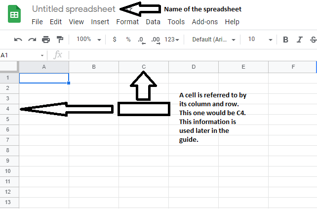
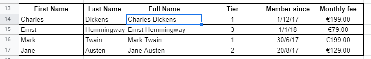

A guide to Google Sheets from beginner to expert.
Table of Contents
Getting Started
What is Google Sheets and why should I use it?
Google Sheets is a free, cloud-based spreadsheet application. If that doesn't say much for you, think Microsoft Excel with some changes.
The strongest point of Google Sheets, is the fact that it's cloud based, which means your files will always be updated no matter where you are, and collaborating with people is much easier.
The first thing we have to do before we can get started, is opening Google Sheets and creating a new spreadsheet. To get started on a blank sheet, click on the big '+' in the top left as indicated in the image below.

A few things to note before we start working in our sheet. Before we start using any formulas, we need to understand how we can refer to specific cells so we can use them in our formulas. Sheets uses a grid system, so a cell reference is determined by the column and row it is in, much like in chess or battleship.
The last thing before we start working: expect to make mistakes. No need to worry, simply press CTRL + Z (or CMD + Z on Mac) and you'll revert back one step.
Beginner
I think we can all imagine (to some extent) what a spreadsheet is used for: data tables. I'll be skipping over what they look like as this guide will be mostly focused on functions and formulas, but if you're interested in this just contact me here and I can add it later.
Formulas
In order to start using a formula, you have to first put an equal sign (=) in the cell before adding your formula. This is pretty much the same as using a calculator, so make sure to keep the priority rules (PEMDAS / BEDMAS / BODMAS / BIDMAS) in mind before throwing random numbers in your spreadsheet.
For example, if you type "=10/2" in a cell, it will show 5. you can see the formula in the formula bar on top, while the result is in the cell as you can see below.

Basic Functions
There are many functions in Google Sheets, but we have to start somewhere. In this section we'll be discussing COUNT, SUM and AVERAGE.
Click on cell B8, type an equals (=) and then start typing the word COUNT. You’ll notice an auto-complete menu comes up showing all of the functions beginning with C, like this:

You can either keep typing COUNT in full, or find it and select in from the list (hover over it and click on it OR hit enter OR hit tab). Next you’ll see a question mark to the left of the cell.
Clicking this will open the formula helper, which tells you about the formula syntax and how to fill it in correctly:
In this case, the COUNT function is expecting a list of numeric values.
You have to select the range of cells you want to count. So click on B4, hold you mouse down and drag down to B7, so that the four cells are highlighted in orange and B4:B7 is showing up in your function: Then, close the function with a closing bracket “)”: =COUNT(B4:B7)
Keep in mind that COUNT is used to count numbers. If you want to count anything else, COUNT will give you a 0, so you'll have to use COUNTA instead.
If we translate the above example to a real world example, COUNT would tell us how many members our gym has. Another important piece of information would be how much money our gym is earning monthly.
To calculate this, we need to use the SUM function on the monthly fees. in D8, type =SUM(D4:D7) and the result will be our total monthly income as such:
Another interesting thing we could find with the data we have collected, is how much members pay on average. start typing =AVERAGE(D4:D8) in D9 and we'll find out the answer.
This brings us to the end of the mathematical functions for beginners. As a bonus I will point out 1 last function that I find very useful in my current role: CONCATENATE().
Concatenate is used to combine 2 cell texts together without manually adding everything together. Using the example of our gym membership table, it's common to sign up for a gym by filling out our first and last name separately.
While our example had both in column A, the more realistic example would look like this:
I've already added an empty column for a full name to show the use of concatenate. To get the full name in C14, we simply type =CONCATENATE(A14," ",B14) to get the result we want.
Note that we added both name cells, separated by commas, and " " in the middle, to add an extra space between the first and last name. If we want to get the full name for the other members, instead of typing the function into every cell in column C, we can simply copy the function we already typed, and paste it in the other cells. Google Sheets will automatically adjust the cell references to match where we pasted the function.
Intermediate
Now that we've finished discussing concatenate, we're done with the beginner stages and it's time for us to progress into the intermediate section.
Cell References
An important thing to discuss are the cell references we've mentioned earlier, and how you can use them efficiently.
Remember when we used concatenate, we were able to copy the function from C14 to C15, C16 and C17 and the correct names showed up? That was because we used relative references. This means that the function will adjust based on where you put it.
If we need to use the exact same cell for multiple functions, it's helpful to use absolute references. For example: if you look at the URL for Google Sheets, Google Docs, and Google Slides, you'll notice they all start with https://docs.google.com/ followed by the word that identifies the specific application.
In the below image I've used concatenate in combination with an absolute reference, and a relative reference, to make it possible to copy/past the function to the other cells and get a working link.
In the formula bar you can see I refer to cell A2 by typing $A$2 while B4 is simply B4. B4 is a relative reference that will change when copy/pasting, while A2 will stay the same no matter where we paste the function.
The $ "locks" both the column and row in place so to speak, making this example possible without a lot of manual typing.
Using multiple tabs
When working with data, quite often do we use a tab to keep all of our raw data, while using another tab to sort through it and apply functions to it. If we're trying to refer to a cell in a different tab, instead of simply typing "=A2", we have to first type the name of the tab, followed by an exclamation mark, and then the cell we want.
If we take the previous example of the cell references and add a new tab, we now have a tab named "Sheet1" that contains the following data:
Let's say we want the links in a different tab, while the base URL and identifiers stay in sheet 1. Our first step would be to create a new tab by clicking the + icon in the bottom left corner
Now we have 2 tabs: Sheet1 with our previous data, and Sheet2 that is completely empty. If we use the same concatenate formula, we have to adjust the cell references from $A$2,B2 to Sheet1!$A$2,Sheet1!B2 like so:

One last thing to note on this subject is this: If you rename your tabs (double click on the tab name or right click > rename) and the new name contains a space, any reference will require you to put the tab name in single quotes for the functions to work.
Congrats on making it this far, you now know how to get started in Google Sheets on your own. But wait, at the start of the guide I mentioned the strongest point of Google sheets was that it was cloud based, making collabs much easier so lets discuss that topic a bit further.
Collaborating
The first step of collaborating with others on a sheet is sharing it with them. In order to do so, click on the share button in the top right and select the sharing settings that work best for you.
By default your sharing settings will be set to "Restricted", preventing others of accessing your files unless you explicitly allow them access. In the top part (1) you can add collaborators using their email address. If you'd rather not add individual collaborators, you always have the option of changing the settings in the bottom half (2).
After opening the additional sharing settings, you can change the sheet from "restricted" to "anyone with the link" (1). This will allow access to anyone that manages to get their hands on the link to your sheet. While this is less work for you, this also means it's not a good idea to do this with more sensitive information, as it can be leaked by any of the collaborators.
If you do decide to allow access to anyone with the link, you have to change the access rights (2) from "viewer" to "editor" if you want them to not only see the data, but also add to it themselves.
Advanced Functions
Next we should talk about the VLOOKUP function. This is mostly used to merge together data from 2 tables that have at least 1 column in common. Here is the syntax for VLOOKUP: =VLOOKUP(search_key, range, index, [is_sorted]).
As a rule of thumb, is_sorted should be FALSE. Not using FALSE will more often than not result in an error in the fuction, and in the rare case that you shouldn't be using FALSE, you should have more than enough knowledge of the function that I would question why you're checking out this guide.
To explain the other attributes, search_key is the term or number that you're looking for, range is the table that you're looking in, and index is the number of the column for the term you want to find. I know this is all a bit much to take in at first, so here you can see an example:
In this example, the search key ranges from A9 to A12, depending on the row. The range is always A2:B5, which is the table in the top left. The index is 2, which is column B, and is_sorted is FALSE, as mentioned before. To put this into simpler terms: we're looking for student IDs, in the table that shows what grades our students got, and we want to know what grade they got.
If this wasn't able to explain it enough, I would suggest having a look at the official documentation here. The Google support page is a good resource for other functions, so keep a link to this saved somewhere for the future.
You've made it this far, you're able to do all kinds of things with the things we've covered, and other functions you've no doubtedly encountered outside of this guide. The biggest difficulty you'll encounter at this point, is how to combine multiple functions together (also called nesting).
Before I let you go into the world with your newfound knowledge, I would like to mention 1 more function. This is one of the most powerful and versatile functions, but unfortunately one of the most complex one too: QUERY
While you can do a nearly infinite amount of things with QUERY, the biggest issue is that you'll need at least a basic understanding of Google's Visualization API Query Language. This guide won't be covering that topic, so I will just show a small example and let you decide if you want to dive deeper into it or not.
I've taken the previous example of our list of students, and have queried for 2 different scenarios: students that passed (scored 90 or more) and students that failed (scored below 90). The syntax for query is like this: =QUERY(data, query, [headers]).
In our example, our data is A2:B5 as I don't need the headers, just the data. Our query for students that passed is "select A where B>=90". What this means is: give me every student ID that has a grade of 90 or more. the last 0 just means I don't want to copy over any headers.
There is a lot more to learn about the query function, and about Google Sheets in general, but that falls outside the scope of this guide. I hope I was able to help you at least a little in your journey through this application.